Lecture 04: Mixture of Experts
TL;DR
- Mixture of Experts (MoE) models are becoming the standard for high-performance large language models (LLMs) due to their ability to achieve better performance for the same computational cost (FLOPs) during training and inference.
- The core idea of MoE is to replace dense feed-forward networks (FFNs) in a transformer block with multiple smaller FFNs (experts) and a router that selectively activates a subset of these experts for each token.
- MoE models offer more parameters per FLOP, leading to better memorization and performance, and enable expert parallelism, allowing models to be distributed across many devices.
- Training MoEs is challenging due to the non-differentiable nature of routing decisions and potential instability. Practical solutions involve heuristic balancing losses and careful architectural choices like fine-grained and shared experts.
- Recent advancements, particularly from DeepSeek, have refined MoE architectures, incorporating fine-grained experts, shared experts, and sophisticated routing mechanisms to optimize for both performance and system efficiency.
Key Concepts
- Mixture of Experts (MoE): A neural network architecture where different "expert" sub-networks are specialized to process different inputs or parts of inputs.
- Sparse Activation: Only a subset of experts are activated for a given input, reducing computational cost compared to dense models with similar parameter counts.
- Router (Gating Network): A component that determines which experts are activated for each input token.
- Experts: Typically smaller feed-forward networks (FFNs) within a transformer block.
- FLOPs (Floating Point Operations): A measure of computational cost. MoEs aim to increase parameters without increasing FLOPs.
- Parameters: The total number of weights and biases in a model. MoEs allow for a massive increase in parameters.
- Expert Parallelism: Distributing different experts across different computational devices (GPUs/TPUs) to speed up training and inference.
- Top-K Routing: A common routing strategy where the router selects the K experts with the highest scores for each token.
- Fine-grained Experts: Dividing the original FFN into smaller, more numerous experts to increase the total parameter count without increasing FLOPs.
- Shared Experts: Experts that are always active for all tokens, handling common processing tasks.
- Load Balancing Losses: Heuristic losses added to the training objective to encourage the router to distribute tokens evenly among experts, preventing "dead" experts.
- Stochastic Approximations: Adding noise or perturbations to routing decisions to encourage exploration and robustness.
- Upcycling: A training method where a pre-trained dense model is used to initialize an MoE, leveraging existing knowledge to accelerate MoE training.
- Multi-head Latent Attention (MLA): An attention optimization that projects keys and values into a lower-dimensional "latent" space for caching, reducing KV cache size.
[0:00] Introduction to Mixture of Experts (MoE)
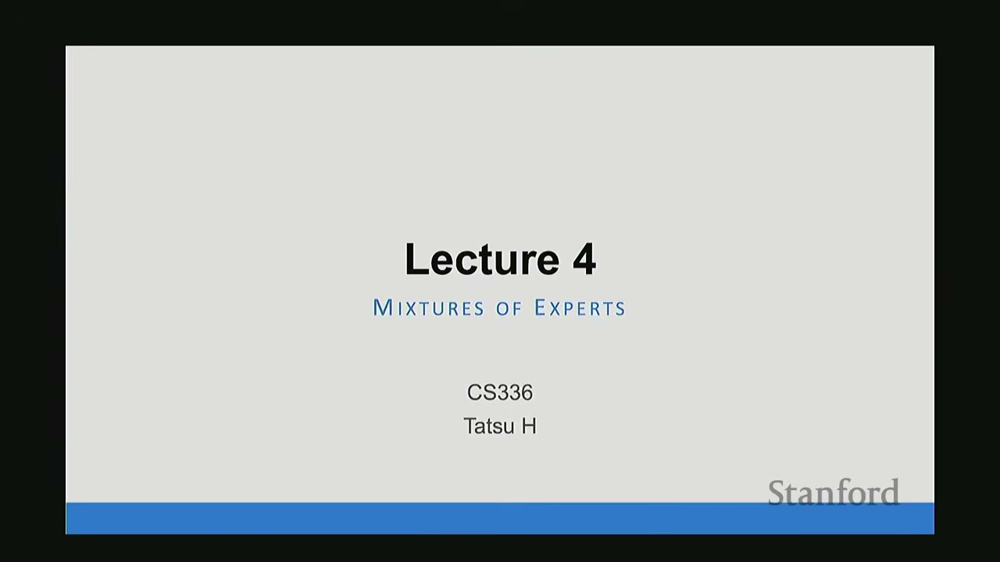
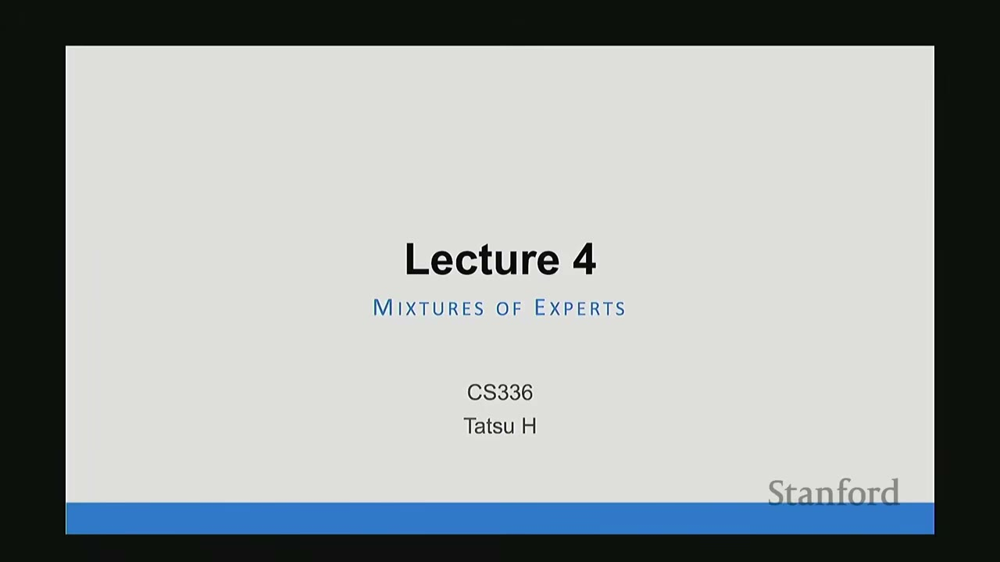
The lecture begins by introducing Mixture of Experts (MoE) as a critical and increasingly popular topic in large language model (LLM) development. Initially a "bonus" topic, MoEs have become central to modern high-performance systems.
Recent LLMs adopting MoE architectures include: * Mistral AI * Grok * DeepSeek * Llama 4 (Maverick) * GPT-4 (speculated as GPT-MoE-1.8T)
The advantage of MoEs over dense architectures is now "very much clear," offering benefits across all compute scales. Understanding MoEs is crucial for building state-of-the-art models within given computational budgets (FLOPs).
[1:34] What is an MoE?
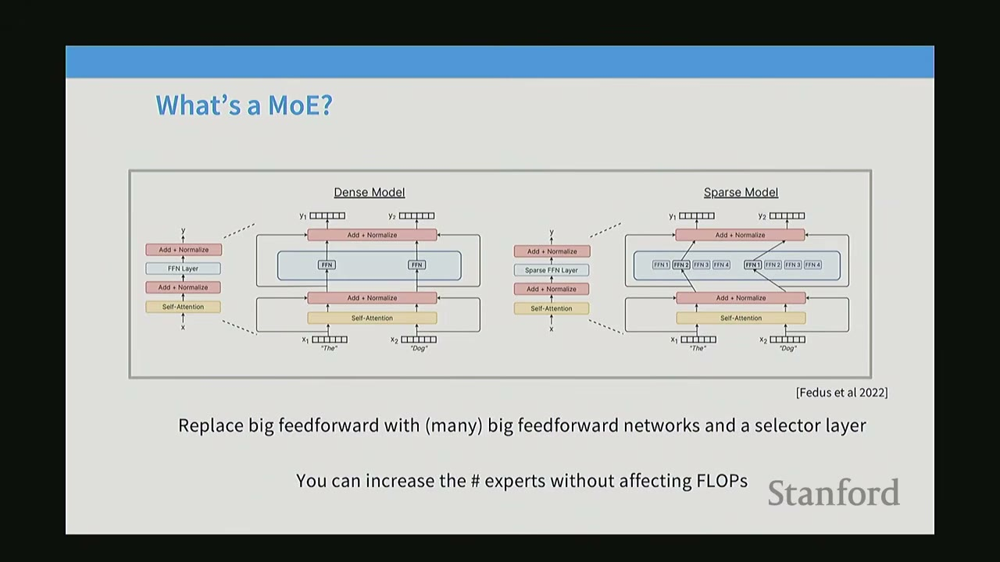
An MoE is a type of neural network architecture where different "expert" sub-networks are activated sparsely. The name "Mixture of Experts" can be misleading; it doesn't necessarily imply specialization in different domains (e.g., a "coding expert" and an "English expert"). Instead, it refers to a specific architectural pattern.
The core idea of MoE primarily applies to the Multi-Layer Perceptrons (MLPs) or Feed-Forward Networks (FFNs) within a transformer block.
Dense Model vs. Sparse Model (MoE): * Dense Model (Left): A standard transformer block contains a self-attention layer followed by a single, large FFN. * Sparse Model (Right): In an MoE, the single FFN is replaced by multiple FFNs (experts). A router (or gating network) is introduced to select a smaller number of these experts for each forward pass or inference step.
The key benefit is that you can have many more parameters (by having many experts) without increasing the FLOPs for a single forward pass, as only a subset of experts are activated. If an expert in an MoE is the same size as the FFN in a dense model, and only one expert is activated, the FLOPs are identical.
[3:34] Why are MoEs getting popular?
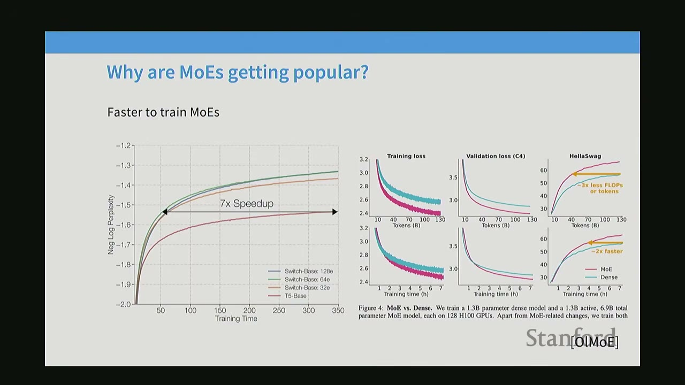
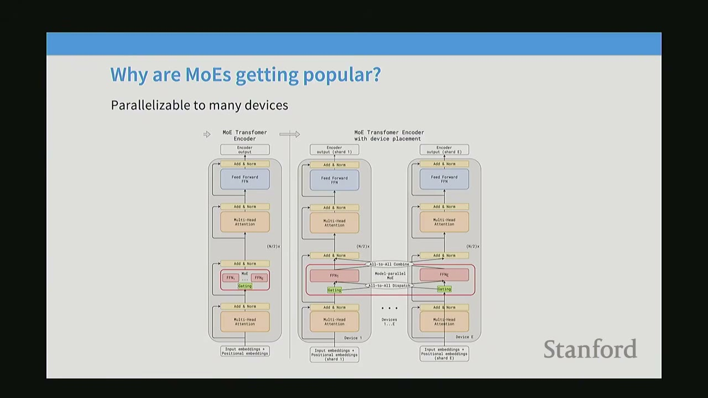
MoEs are gaining popularity because they offer better performance for the same computational cost.
Key advantages: 1. Same FLOPs, more parameters, better performance: For a fixed FLOP budget during training, increasing the number of experts in an MoE consistently leads to lower test loss and better perplexity. This means MoEs can learn more effectively by having more parameters to memorize facts about the world. * Graph (Fedus et al. 2022): Shows that as the number of experts increases (from 1e to 256e), the test loss decreases significantly for the same FLOPs. * Graph (Fedus et al. 2022): Shows that models with more experts (e.g., Switch-Base 128e) achieve better perplexity faster during training compared to models with fewer experts or dense models (T5-Base). This indicates faster convergence and better final performance. * Graph (AI2 OLMo): Confirms these findings, showing that MoEs (pink line) achieve lower training and validation loss much faster than dense models (teal line) for the same training time.
-
Faster to train MoEs: Due to sparse activation, MoEs can achieve a given performance level with significantly less training time compared to dense models.
- Graph (Fedus et al. 2022): Illustrates a 7x speedup in training time for MoEs to reach the same perplexity as a dense model.
- Graph (AI2 OLMo): Shows that MoEs achieve 3x less FLOPs or 2x faster training time for similar performance.
-
Highly competitive vs. dense equivalents: MoEs consistently outperform dense models when comparing performance against "activated parameters" (parameters actually used in computation for a given inference step).
- Graph (DeepSeek V2 paper): Plots performance (MMLU) against activated parameters (billions). MoE models like DeepSeek V2, Mistral 8x22B, and Grok-1 achieve significantly higher MMLU scores for a given number of activated parameters compared to dense Llama models. This highlights the efficiency of MoEs in leveraging parameters for performance.
-
Parallelizable to many devices: MoEs offer a natural axis of parallelism, which is crucial for scaling up large models.
- Diagram (MoE Transformer Encoder vs. Encoder with Device Placement):
- In a dense transformer, the FFN is a single block.
- In an MoE, the FFN is split into multiple experts.
- Each expert can be placed on a different computational device (e.g., GPU). The router then directs tokens to the appropriate device, allowing for efficient distribution of computation. This is called expert parallelism. This makes MoEs particularly attractive for very large-scale models that require multi-node training.
- Diagram (MoE Transformer Encoder vs. Encoder with Device Placement):
[9:03] MoE Results from the West and China
MoE development has seen significant contributions from both Western and Chinese research groups. * While Google (a Western company) has been a pioneer in MoE research, many early open-source breakthroughs came from China. * Qwen and DeepSeek (Chinese companies) were early adopters and contributors to large-scale, well-documented MoE models. * Qwen 1.5 was one of the first models to demonstrate a "clever trick" to upcycle a dense model into an MoE, showing significant gains in compute efficiency. * DeepSeek papers provided foundational work, carefully comparing dense, naive MoE, and switch-routed MoE architectures, consistently showing performance improvements for a fixed FLOP budget. * More recently, Western open-source groups like Mistral, Grok, and Llama 4 have also adopted MoE architectures, confirming the trend. * DeepSeek V3 is presented as a culmination of this work, demonstrating remarkable performance. The speaker notes that architecturally, DeepSeek V3 is not drastically different from earlier DeepSeek MoE versions, suggesting that the core engineering principles were established early on.
[2:16] Why haven't MoEs been more popular?
Despite their advantages, MoEs have historically been less prevalent due to several challenges:
-
Infrastructure Complexity:
- MoEs are complex to implement, especially when leveraging multiple accelerators (GPUs/TPUs).
- Their main advantage (sparsity) comes with the additional complexity of managing sparse data.
- Training typically involves data parallelism, where different machines get different slices of the training/inference data.
- For sparse models, data needs to be routed to specific machines hosting the activated experts, which requires sophisticated systems for efficient high-throughput serving.
- The biggest benefits of MoEs are realized in multi-node training environments where model splitting is already necessary.
-
Training Objectives are Heuristic and Unstable:
- The decision of which expert to route a token to is a discrete, non-differentiable choice. This makes direct gradient-based optimization difficult.
- Training objectives for MoEs are often heuristic (e.g., using proxy losses) and can lead to unstable training, making them harder to optimize compared to dense models.
[3:50] What MoEs generally look like
The typical MoE architecture involves replacing the FFNs in a transformer block with an MoE layer.
-
Typical MoE (FFN-based):
- A standard transformer block has self-attention followed by an FFN.
- In an MoE, the FFN is replaced by multiple FFNs (experts) and a router.
- The router selects a subset of experts for each token.
- This is the most common and successful approach.
-
Less Common MoE (Attention-based):
- It's theoretically possible to apply MoE to attention heads, where a router would select specific attention heads for different tokens.
- Some research has explored this, but it's generally found to be even more unstable and difficult to train consistently. Major model releases rarely use attention-based MoEs.
[4:45] MoE - what varies?
When designing an MoE, several key choices need to be made:
- Routing Function: How are tokens assigned to experts?
- Expert Sizes: How many experts are there, and how large is each expert?
- Training Objectives: How is the router trained, especially given the non-differentiable routing decisions?
These design questions define the vast design space of MoEs.
[5:34] Routing Function - Overview
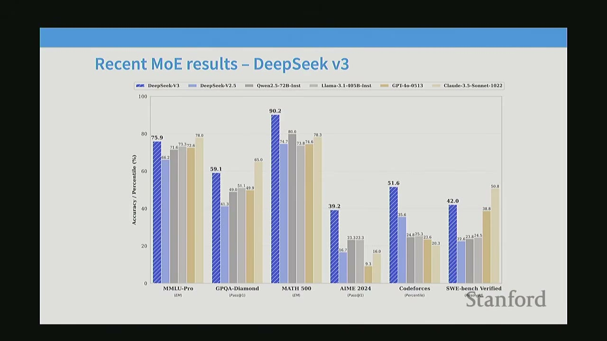
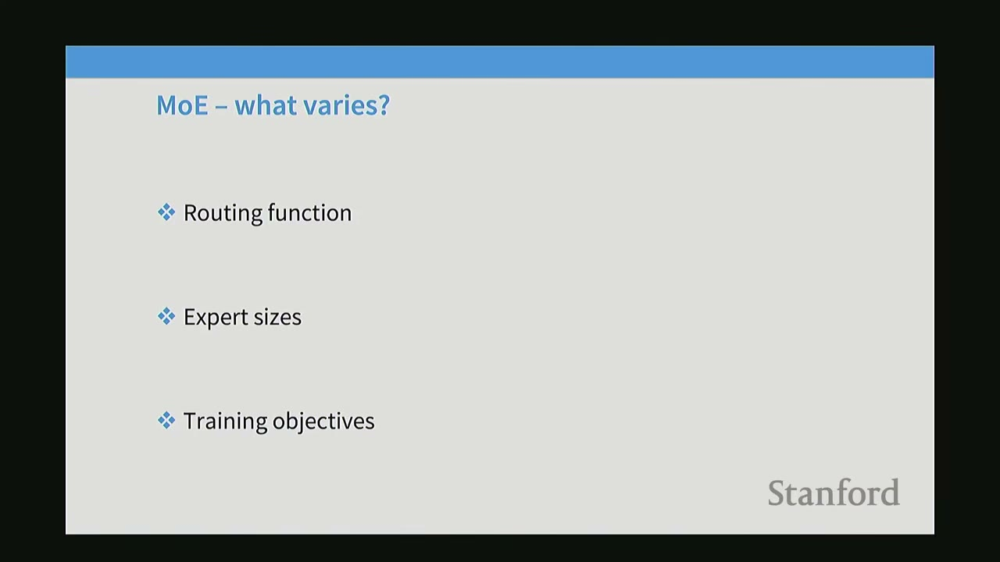
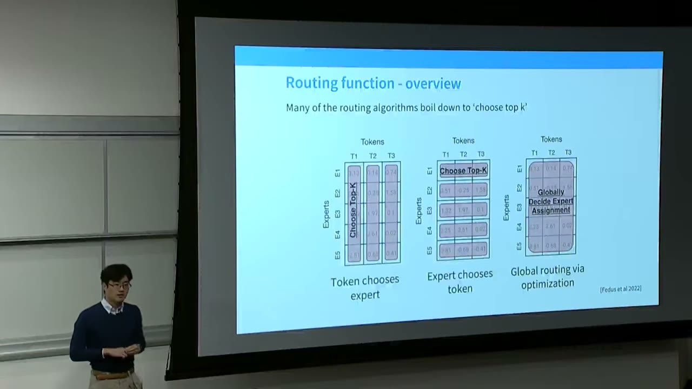
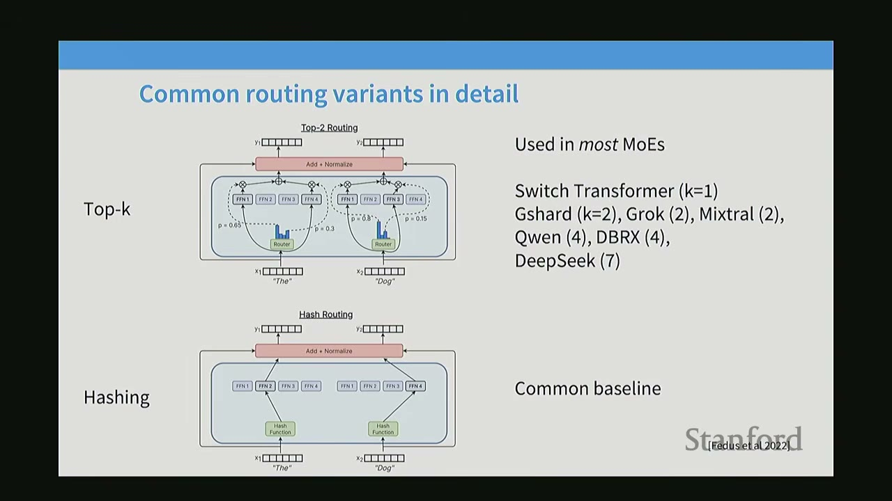
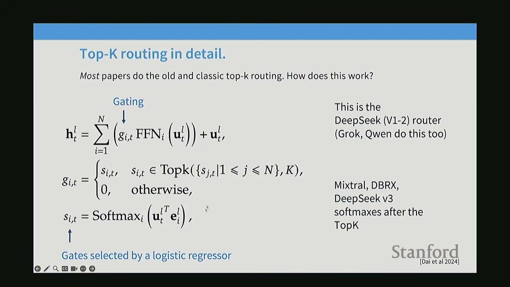
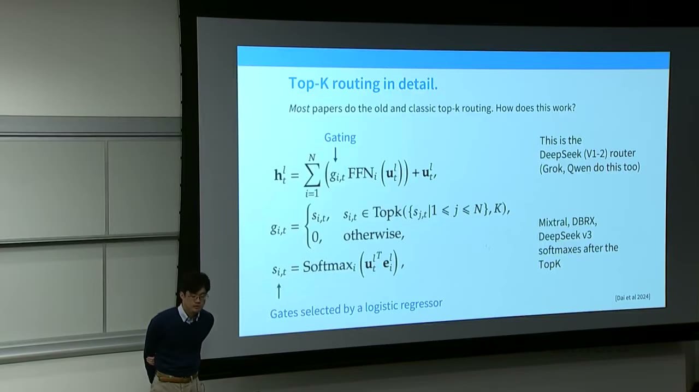
The core of an MoE is how it matches tokens to experts. Not all experts process every token; this is the essence of sparse routing.
Three main types of routing algorithms:
-
Token Chooses Expert (Token Choice):
- Each token has a preference score for each expert.
- The router selects the top-K experts with the highest scores for each token.
- Benefit: Each token is processed by the most relevant experts.
- Drawback: Can lead to imbalanced expert utilization if some experts are consistently preferred.
-
Expert Chooses Token (Expert Choice):
- Each expert has a preference score for each token.
- The router selects the top-K tokens with the highest scores for each expert.
- Benefit: Ensures balanced utilization of experts, as each expert processes a fixed number of tokens.
- Drawback: A token might not be processed by its "best" expert if that expert is already "full."
-
Global Routing via Optimization:
- A more complex approach that involves solving an optimization problem (e.g., linear assignment) to globally decide expert assignments, aiming to balance both token relevance and expert utilization.
- Benefit: Theoretically optimal balance.
- Drawback: High computational cost and complexity.
Practical Choice: * Almost all modern MoEs use Token Choice Top-K routing. * Early MoE research explored various routing strategies, but recent large-scale models have converged to this method. * Ablations (OLMo): Show that Token Choice (TC) routing generally leads to better performance (lower validation loss, higher MMLU Var) compared to Expert Choice (EC) routing.
Q&A on Routing: * How does a token know which expert is best? The router, which is a lightweight neural network, learns to predict scores for each expert based on the token's hidden state. It's typically a simple linear projection followed by a non-linearity (e.g., sigmoid or softmax). * What is K? K is a hyperparameter representing the number of experts activated per token. Early MoE papers suggested K > 1 (e.g., K=2) to encourage exploration (avoid always picking the "best" arm and missing out on potentially better ones). K=2 remains a common choice. * What happens if K > 1? If K > 1, multiple experts process the token, and their outputs are combined (e.g., summed or weighted average) before being passed to the next layer.
[1:16:00] Common Routing Variants in Detail
The lecture details the two most common routing variants:
-
Top-K Routing (Token Choice Top-K):
- Mechanism: For each token, the router computes scores for all experts. The top-K scoring experts are selected. Their outputs are combined (e.g., weighted sum based on router scores).
- Usage: Used in most modern MoEs, including Switch Transformer (K=1), GShard (K=2), Grok (K=2), Mixtral (2), Qwen (4), DBRX (7), and DeepSeek (7).
- Diagram: Shows an input
xgoing through aRouterthat outputs probabilitiesp1, p2, p3, p4. If K=2, the top two (e.g., p1=0.6, p3=0.3) are selected, and their corresponding FFNs (Expert-1, Expert-3) are activated. Their outputs are then combined.
-
Hashing:
- Mechanism: A simple hash function maps each token to a specific expert. No learned router is involved.
- Usage: Serves as a common baseline. Surprisingly, even this non-semantic routing can yield performance improvements over dense models.
- Intuition for Hashing's Effectiveness: Even random assignment creates specialized subsets of data for each expert. If the data distribution is Zipfian (like natural language), some experts might inadvertently specialize in very frequent tokens/patterns, leading to some form of implicit specialization.
[2:50] Other Routing Methods
-
Reinforcement Learning (RL) to learn routes:
- Idea: Treat routing as a discrete decision problem and use RL to learn optimal gating policies. This is conceptually appealing as RL excels at discrete decision-making.
- Usage: Used in some of the earliest MoE work (e.g., Bengio 2013).
- Drawback: Not commonly used now due to high computational cost and existing stability issues with MoEs. RL adds significant complexity without a clear performance win.
-
BASE Routing (Solving a Matching Problem):
- Idea: Formulate routing as a linear assignment problem or optimal transport problem, aiming for balanced and efficient assignments.
- Usage: Explored in some recent papers (e.g., Clark '22).
- Drawback: Computationally expensive, often outweighing the benefits in practice.
[3:45] Top-K Routing in Detail (Mathematical Formulation)
This section provides the mathematical details of the standard Top-K routing used in most MoEs.
$$ h'_{t} = \sum_{i=1}^{N} g_{i,t} \text{FFN}_{i}(u_{t}^{L}) + u_{t}^{L} $$
Where: * $u_{t}^{L}$: Input residual stream for token $t$ at layer $L$. * $\text{FFN}_{i}$: The $i$-th expert (feed-forward network). * $g_{i,t}$: The gating weight for expert $i$ and token $t$. * $N$: Total number of experts. * The sum is over the activated experts.
The gating weights $g_{i,t}$ are determined as follows:
$$ g_{i,t} = \begin{cases} s_{i,t} & \text{if } s_{j,t} \in \text{TopK}(\{s_{j,t} | 1 \le j \le N\}, K) \\ 0 & \text{otherwise} \end{cases} $$
Where: * $s_{i,t}$: The raw score for expert $i$ and token $t$. * $\text{TopK}(\cdot, K)$: A function that selects the top $K$ values. * This means only the top $K$ experts receive non-zero gating weights.
The raw scores $s_{i,t}$ are typically computed using a logistic regressor (a simple linear layer followed by a softmax):
$$ s_{i,t} = \text{Softmax}(u_{t}^{L} e_{i}^{T}) $$
Where: * $e_{i}$: A learned vector (expert embedding) representing expert $i$. This vector is not tied to the FFN parameters.
Key points: * Gating: The process of selecting experts and weighting their outputs. * Softmax: The softmax function normalizes the raw scores $s_{i,t}$ to sum to 1, effectively turning them into probabilities. * Top-K Selection: After computing softmax scores, only the top $K$ experts are chosen. The gating weights for non-selected experts are set to 0. * System Efficiency: The Top-K selection is crucial for achieving sparse activation during both training and inference. Without it, activating all experts would incur the full FLOPs cost of a dense model with $N$ times the parameters. * Non-differentiability: The Top-K operation is non-differentiable, making direct gradient-based optimization challenging.
Q&A on Top-K Routing: * Softmax then Top-K: The softmax is applied first to get normalized scores, then Top-K selects the highest. The resulting $g_{i,t}$ values (after zeroing out non-top-K experts) no longer sum to 1. This is acceptable because the next layers (e.g., LayerNorm) can adjust the scale. * E-vectors: The $e_i$ vectors are learned parameters of the router, separate from the FFN parameters. They represent what kind of input each expert is "looking for." * Learning Challenge: The non-differentiable nature of Top-K makes learning the router's parameters (the $e_i$ vectors) difficult. The gradients for non-selected experts are zero.
[2:00] Recent variations from DeepSeek and other Chinese LLMs
DeepSeek introduced several architectural innovations that were quickly adopted by other MoE models.
-
Fine-grained Experts:
- Idea: Instead of having a few large experts, have many smaller experts. This allows for a massive increase in the total number of parameters without increasing FLOPs (since each expert is smaller).
- Mechanism: If a standard FFN multiplies the hidden dimension by 4 (e.g., $H \rightarrow 4H$), fine-grained experts might multiply by 2 (e.g., $H \rightarrow 2H$) and then have twice as many experts. This can be extended to $H \rightarrow H/X$ for $X$ times more experts.
- Benefit: More parameters for the same FLOPs, leading to better performance.
- Diagram (b): Shows a "fine-grained expert segmentation" where the FFNs are smaller (e.g., 2W instead of 4W), allowing for more experts (e.g., N experts instead of N/2).
-
Shared Experts:
- Idea: Include a few experts that are always active for all tokens, regardless of the router's decision.
- Benefit: These shared experts can learn common, universally applicable patterns or processing tasks, reducing the burden on specialized experts and potentially improving overall efficiency.
- Diagram (c): Shows "shared expert isolation" where some experts (green) are always active, while others (blue) are routed.
Ablations from DeepSeek paper: * Graph: Shows normalized performance across various benchmarks (HellaSwag, PIQA, ARC-Easy, ARC-Challenge, TriviaQA, NaturalQuestions). * Findings: * Adding one shared expert (orange bar) provides a significant boost on some tasks. * Adding fine-grained experts (green and yellow bars) provides further boosts. * Combining these innovations (e.g., 1 shared expert + fine-grained experts) consistently leads to the best performance across most benchmarks. * Conclusion: More experts (especially fine-grained) and shared experts generally help.
Ablations from OLMoE (AI2): * Graphs: Corroborate DeepSeek's findings. * Fine-grained experts: Increasing the number of fine-grained experts (from 8 to 64) leads to clear improvements in training loss, validation loss, and MMLU Var. * Shared experts: In the OLMo setup, shared experts (purple vs. teal) did not show significant gains, suggesting this innovation might be more context-dependent or require specific tuning. OLMo ultimately opted for no shared experts.
[7:07] Expert Routing Setups for Recent MoEs
A table summarizes the routing configurations of various prominent MoE models:
| Model | Routed | Active | Shared | Fine-grained ratio |
|---|---|---|---|---|
| GShard | 2048 | 2 | 0 | 0 |
| Switch Transformer | 64 | 1 | 0 | 0 |
| ST-MoE | 64 | 2 | 0 | 0 |
| Mixtral | 8 | 2 | 0 | 0 |
| DBRX | 16 | 2 | 0 | 0 |
| Grok | 8 | 2 | 0 | 0 |
| DeepSeek v1 | 64 | 6 | 2 | 1/4 |
| Qwen 1.5 | 64 | 4 | 1 | 1/14 |
| DeepSeek v3 | 256 | 8 | 2 | 1/8 |
| OLMoE | 32 | 8 | 0 | 1/8 |
| MiniMax | 64 | 8 | 0 | ~1/4 |
| Llama 4 (maverick) | 128 | 1 | 1/2 | 0 |
Observations: * Early Google models (GShard, Switch Transformer, ST-MoE): Explored a wide range of "routed" experts (up to 2048), often with K=1 or K=2 active experts, and no explicit shared experts. * Mid-range models (Mixtral, DBRX, Grok): Tend to use fewer total experts (8-16) with K=2 active, and no shared experts. * DeepSeek and Qwen: Pioneered the use of fine-grained experts (indicated by ratios like 1/4, 1/14, 1/8) and shared experts. * DeepSeek v1: 64 routed, 6 active, 2 shared, 1/4 fine-grained ratio. * Qwen 1.5: 64 routed, 4 active, 1 shared, 1/14 fine-grained ratio. * DeepSeek v3: 256 routed, 8 active, 2 shared, 1/8 fine-grained ratio. * Recent models (OLMoE, MiniMax, Llama 4): Continue to use fine-grained experts and often shared experts, with varying numbers of total and active experts. * Llama 4 is unique in having a 1/2 shared expert, implying the shared expert is half the size of a standard FFN.
Key takeaway: The trend is towards using fine-grained experts and often shared experts to maximize parameter count and performance for a given FLOP budget. For very large models like DeepSeek and Llama 4, the number of total experts can be very high (hundreds).
[1:50:00] How do we train MoEs?
The major challenge in training MoEs is achieving training-time efficiency while dealing with non-differentiable sparse gating decisions.
Potential Solutions: 1. Reinforcement Learning (RL) to optimize gating policies: * Idea: Treat the router as an agent making discrete decisions and use RL algorithms (e.g., REINFORCE) to learn optimal gating policies. * Pros: Principled approach for non-differentiable decisions. * Cons: In practice, RL for MoEs hasn't shown significant improvements over simpler methods. High gradient variance and complexity make it finicky and not widely used at scale.
-
Stochastic perturbations:
- Idea: Introduce noise or randomness into the routing decisions to make them "soft" and encourage exploration.
- Mechanism (Shazeer et al. 2017): Instead of directly computing $s_{i,t} = \text{Softmax}(u_{t}^{L} e_{i}^{T})$, they add Gaussian noise to the logits: $H(x)_i = (x \cdot W_g)_i + \text{StandardNormal}() \cdot \text{Softplus}((x \cdot W_{noise})_i)$. The $W_{noise}$ matrix is learned to control the amount of noise.
- Benefits: Naturally leads to experts that are a bit more robust (less specialized). The softmax (after Top-K) helps the model learn to rank experts.
- Drawbacks: Stochasticity can lead to less specialization and loss of efficiency. This approach was tried in early Google papers but often abandoned for heuristic loss-based methods.
-
Heuristic "balancing" losses:
- Idea: Add auxiliary loss terms to the training objective that encourage the router to distribute tokens evenly among experts. This prevents "dead" experts (experts that are never chosen) and ensures all parameters are utilized.
- Mechanism (Switch Transformer, Fedus et al. 2022): The loss function is augmented with a term that penalizes imbalanced expert utilization.
- $L_{aux} = \alpha \sum_{i=1}^{N} f_i P_i$
- $f_i$: Fraction of tokens dispatched to expert $i$ (actual utilization).
- $P_i$: Fraction of router probability allocated to expert $i$ (intended utilization).
- The derivative with respect to $P_i$ shows that experts with higher $P_i$ (more frequently used) are downweighted more strongly, encouraging the router to explore other experts.
- Types of Balancing:
- Per-expert balancing: Ensures each expert receives a roughly equal number of tokens per batch.
- Per-device balancing: Aggregates expert utilization by device, ensuring each device (e.g., GPU) receives a balanced workload. This is crucial for system efficiency.
- DeepSeek V3 Variation (Per-expert biases):
- DeepSeek V3 replaces the per-expert balancing loss with a simpler mechanism: per-expert biases ($b_i$).
- The router's scores are adjusted by these biases: $g'_{i,t} = s_{i,t} + b_i$.
- The biases $b_i$ are learned through a simple online gradient scheme: if an expert isn't getting enough tokens, its $b_i$ is increased; if it's getting too many, its $b_i$ is decreased.
- This is called "auxiliary loss free balancing" because it avoids adding a complex auxiliary loss term.
- However, DeepSeek V3 also reintroduces a "complementary sequence-wise auxiliary loss" (which is essentially the balancing loss) to handle imbalances at the sequence level, not just the batch level. This suggests that even with clever bias adjustments, explicit balancing losses are often still necessary.
[5:54:00] Issues with MoEs - Stability
MoEs are known to be difficult to train and fine-tune, often exhibiting instability.
- Problem: MoEs can "blow up" during training, especially when using lower precision (e.g., bfloat16). This is often due to numerical instability in the softmax operation, where large logits can lead to overflow or underflow, causing incorrect outputs and unstable gradients.
- Solution (Zoph et al. 2022):
- Use Float32 for the expert router: Performing router computations (especially softmax) in higher precision (Float32) can significantly improve stability, even if the rest of the model uses lower precision (e.g., bfloat16).
- Auxiliary Z-loss: Adding an auxiliary Z-loss (log-sum-exp of logits squared) to the router's objective helps keep the logits bounded, preventing numerical instability.
- Graph (Router Z-loss stability): Shows that removing the Z-loss from the router leads to large, unstable spikes in training and validation loss, indicating severe instability. The Z-loss effectively "tames" the router's logits.
[1:07:00] Issues with MoEs - Fine-tuning
MoEs can also be challenging to fine-tune, especially on smaller datasets.
- Problem: Sparse MoEs, with their massive parameter counts, are prone to overfitting when fine-tuned on smaller, downstream tasks. This leads to a large gap between training and validation performance.
- Graph (SuperGLUE CB Task): Shows that sparse MoEs (blue and orange lines) exhibit a much larger train-test gap (overfitting) compared to dense models (green and red lines) when fine-tuned on a small task.
- Solutions:
- Hybrid Architectures: Architect MoEs such that not every layer is an MoE layer. For example, alternate dense layers with MoE layers. When fine-tuning, only fine-tune the dense layers, which behave more stably.
- Use lots of data: If overfitting is the problem, the solution is to use more data. DeepSeek MoE, for instance, used 1.4 million training examples for fine-tuning, mitigating overfitting concerns.
[1:08:25] Other training methods - Upcycling
Upcycling is a clever trick to initialize an MoE from a pre-trained dense model, saving significant training costs.
- Idea: Instead of training an MoE from scratch, leverage an existing, well-trained dense model.
- Mechanism:
- Take a pre-trained dense model.
- Duplicate its FFN weights to create multiple experts.
- Perturb the copied weights slightly to encourage differentiation among experts.
- Initialize the router from scratch.
- Continue training the resulting MoE.
- Benefit: This method is very cost-effective, allowing for the creation of high-performance MoEs without the immense computational cost of training from scratch. It effectively "transforms" a dense model into an MoE.
- Graph (Upcycling performance): Shows that upcycled MoEs (red dots) achieve significantly better performance (validation token accuracy) for the same pretraining time compared to dense models (blue dots). This is particularly true for larger models.
- Example (MiniCPM): MiniCPM (a Chinese open LLM) successfully used upcycling to create MoEs that outperformed larger dense models, demonstrating the effectiveness of this technique.
- Example (Qwen MoE): Qwen also used upcycling to build their MoE models, achieving strong performance relative to smaller models.
[1:10:10] DeepSeek MoE v1-v2-v3 Architecture Walkthrough
This section provides a detailed walkthrough of the evolution of DeepSeek's MoE architecture, highlighting key changes and innovations.
DeepSeek MoE v1 (16B - 2.8B active): * Architecture: Shared + Fine-grained (64/4) experts. This means 2 shared experts and 64 fine-grained experts, where each fine-grained expert is 1/4 the size of a standard FFN. * Routing: Standard Top-K routing (softmax then Top-K). * Balancing: Auxiliary loss balancing (expert + device level). * Key takeaway: This early version already incorporated the core ideas of fine-grained and shared experts, along with balancing losses.
DeepSeek MoE v2 (236B - 21B active): * Architecture: Shared + Fine-grained (160/10) experts. This means 10 shared experts and 160 fine-grained experts, with 6 active experts. * New Things: * Top-M device routing: To address the communication costs of fine-grained experts, DeepSeek v2 introduced a two-stage routing process. First, the router selects the top $M$ devices. Then, within those $M$ devices, it selects the top $K$ experts. This reduces communication by concentrating token traffic to a smaller set of devices. * Communication balancing loss: To balance communication both in and out, they added a communication balancing loss that considers both input and output communication costs, ensuring efficient data flow across devices.
DeepSeek MoE v3 (671B - 37B active): * Architecture: Shared + Fine-grained (256/8) experts. This means 8 shared experts and 256 fine-grained experts, with 8 active experts. * New Things: * Sigmoid + Softmax + TopM routing: The routing mechanism was further refined. Instead of a simple softmax, they use a sigmoid function for the initial gating decisions, followed by a softmax and TopM selection. This allows for more flexible gating. * Aux-loss-free + Seq-wise aux loss: They moved away from the explicit auxiliary balancing loss, instead relying on the per-expert biases ($b_i$) learned through an online gradient scheme (as discussed earlier). However, they also added a "sequence-wise auxiliary loss" to ensure balancing at the individual sequence level, addressing potential issues with out-of-distribution sequences at inference time.
[1:16:17] Bonus: What else do you need to make DeepSeek MoE v3?
Beyond the MoE-specific innovations, DeepSeek V3 incorporates other advanced techniques common in modern LLMs.
-
Multi-head Latent Attention (MLA):
- Basic Idea: Express the Query (Q), Key (K), and Value (V) as functions of a lower-dimensional "latent" activation.
- Mechanism: Instead of directly generating K and V from the hidden state $H_t$, DeepSeek V3 first projects $H_t$ into a lower-dimensional "latent" representation $C$. This $C$ is then cached (KV cache). When K and V are needed, they are up-projected from $C$.
- Benefits: Reduces the size of the KV cache, which can be a significant memory bottleneck during inference.
- Complexity: This involves an extra matrix multiplication ($W^{UK}$) to project $H_t$ to $C$, and another to project $C$ back to K/V. However, this $W^{UK}$ matrix can be merged with the existing Q projection matrix, avoiding an extra FLOPs cost.
- RoPE Compatibility: This MLA approach is compatible with RoPE (Rotary Positional Embeddings), although special care is needed to handle the rotation matrices.
-
Multi-token Prediction (MTP):
- Idea: Have small, lightweight models that can predict multiple steps ahead.
- Mechanism: In addition to the main transformer predicting the next token, DeepSeek V3 uses a lightweight, one-layer transformer (MTP Module 2) to predict the token after the next token.
- Benefit: This allows the model to "look ahead" during generation, potentially improving coherence and quality.
[1:21:13] MoE Summary
- MoEs take advantage of sparsity: Not all inputs need the full model. This is the fundamental efficiency gain.
- Discrete routing is hard, but Top-K heuristics seem to work: While theoretically challenging, practical heuristic approaches for routing have proven effective.
- Lots of empirical evidence now that MoEs work and are cost-effective: The widespread adoption and strong benchmark results confirm the benefits of MoEs.
Practical Takeaways
- MoEs are the current state-of-the-art for building large, high-performing LLMs due to their parameter efficiency and parallelization capabilities.
- The key to MoE success lies in carefully designed routing functions (Top-K is dominant), fine-grained experts, and effective load balancing strategies.
- Training stability and overfitting are significant challenges, often addressed through techniques like higher precision for routers, Z-loss, and upcycling.
- System-level optimizations, including expert parallelism and communication balancing, are crucial for deploying MoEs at scale.
Open Questions / Things to Remember
- The "expert" in MoE doesn't necessarily imply semantic specialization, but rather a mechanism for sparse activation.
- The non-differentiable nature of Top-K routing is a core challenge, leading to the development of heuristic balancing losses.
- Upcycling dense models to MoEs is a powerful technique for cost-effective initialization.
- DeepSeek V3 showcases a highly engineered MoE, integrating fine-grained experts, shared experts, sophisticated routing (Top-M device routing), and various balancing losses to achieve state-of-the-art performance.